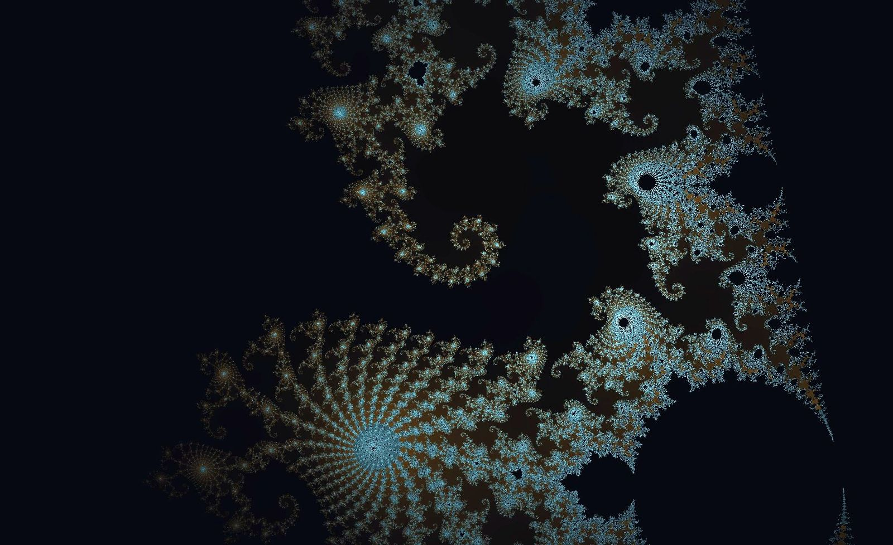

EVRE 01YAZ
Kuralı kendi dilinizde yazın
“Ajan silme ya da para transferi aracı çağırırsa reddet. 5.000 doları aşan işlemi insana gönder.”

Kurallarınızı Türkçe ya da İngilizce yazın. answerr onları açık, sürümlenmiş kurallara derler; aynı girdiye her seferinde aynı kararı verir ve nedenini kaydeder. Tanımadığı bir durumda tahmin etmez, insana devreder.
Sunucu, tarayıcı ve Node aynı çekirdeği çalıştırır; testlerle eşitliği denetlenir.
Dil yalnız politikayı yazarken taslağa çevrilir.
Tanınmayan tek bir alan bile kararı incelemeye gönderir.
Kural, aday hükümler, alan katkıları ve politika mührü (SHA-256).
Aşağıdaki çağrılar sentetik; hükümler gerçek. Her satır tarayıcınızdaki politika çekirdeği ve agent_mcp_guard kapısıyla değerlendirilir, süre de burada ölçülür.
Kararlar api.answerr.me üzerindeki yerleşik kapılardan gelir. API'ye ulaşılamazsa aynı çekirdek tarayıcıda çalışır ve bu açıkça belirtilir.
Düşünme işi politikayı yazarken bir kez yapılır. Karar anında yalnızca derlenmiş, onaylanmış kurallar çalışır.
Bu sayfadaki rakamlar ya şu an tarayıcınızda ölçülür ya da henüz yoktur ve öyle yazılır.
Ajan bir aracı çalıştırmadan önce sorar. Silme ve yetki araçları durur, yazma ve para hareketleri insana gider, okuma geçer.
Türkçe kurallar, mevcut kurallarınızın yanında gölge modda deneme, KVKK'ya uygun barındırma seçeneği.
Hata, hız ve kimlik sinyallerinden gerekçeli erişim kararı.
Konsolda hesap açın, API anahtarınızı alın, ajanınızın ya da ödeme akışınızın önüne kapıyı koyun. Kart gerekmez; Keşif planı ayda 10.000 karar içerir.
curl, Python ve JavaScript örnekleri; insan onayı kuyruğu, gölge mod, webhook’lar ve hata kodları.
Keşif $0 · Geliştirici $29 · Pro $99 · Kurumsal yıllık sözleşme. Token yok, GPU yok; yalnızca karar.
arXiv ön baskıları, Zenodo arşivleri, Lean 4 doğrulamaları ve bekleyen patent başvuruları.
Pilot 60 gün ücretsizdir. Sonrasında yayımlanan fiyatlar geçerlidir; kurucu müşteriler fiyatı 12 ay sabit tutar.